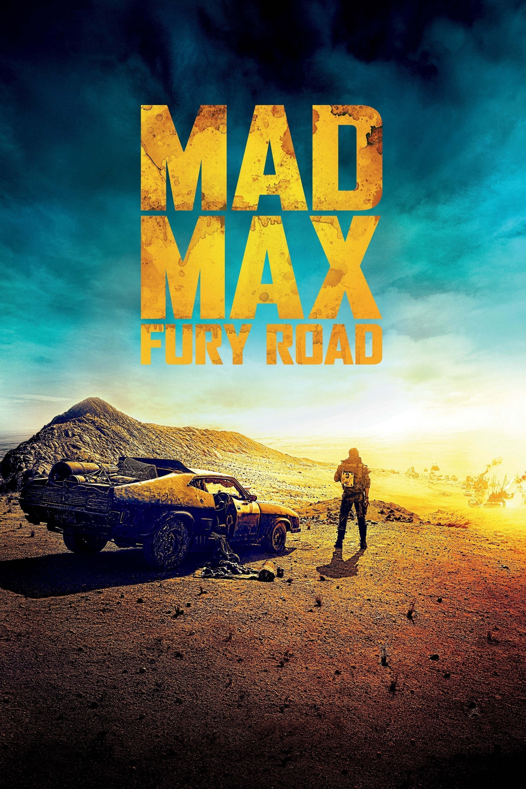

← Voltar para os filmesAÇÃO • FICÇÃO CIENTÍFICA
Mad Max: Estrada da Fúria
Em um deserto pós-apocalíptico, Max se une à guerreira Furiosa e a um grupo de fugitivas em uma perseguição explosiva contra um tirano que controla os recursos da região.